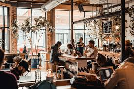
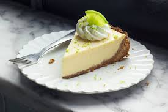
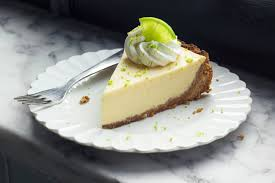
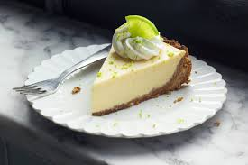

Our Beautiful Cafe
 

Banana Cork Cafe was founded in 2015 by Jane and John Smith as their dream was to open a small cafe. They host small events at their cafe once a month in order to help build a community within their city. Banana Cork Cafe strives to provide customer with a calm, relaxing, and warm environment where they can enjoy food and drinks, talk to friends, and study. Please enjoy your stay at Banana Cork Cafe.
